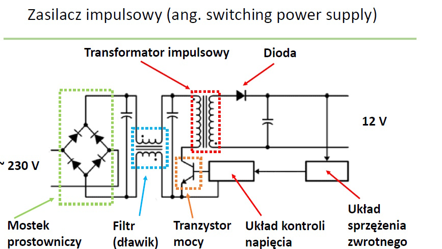

Zasilacz Impulsowy
Zasilacz impulsowy to urządzenie elektroniczne, które zamienia energię elektryczną w celu zasilania innych urządzeń. Jest powszechnie stosowany w nowoczesnych komputerach oraz
innych urządzeniach elektronicznych. W porównaniu z tradycyjnymi zasilaczami liniowymi, zasilacze impulsowe są bardziej skomplikowane, ale jednocześnie bardziej wydajne i lżejsze.
Działanie zasilacza impulsowego
- Zasilacz impulsowy działa na zasadzie kontroli średniego napięcia dostarczanego do obciążenia poprzez otwieranie i zamykanie przełącznika (tranzystora mocy) z dużą częstotliwością.
- Główne sterowanie realizowane jest za pomocą techniki PWM (Pulse-Width Modulation), czyli modulacji szerokości impulsu. Układ PWM w zasilaczu monitoruje napięcie wyjściowe i odpowiednio dostosowuje czas pracy tranzystora, aby zapewnić stabilne napięcie.
Elementy z których składa się zasilacz impulsowy
- Mostek prostowniczy – przekształca napięcie zmienne na napięcie stałe.
- Transformator impulsowy – dostosowuje napięcie i zapewnia izolację galwaniczną.
- Kondensatory – filtrują napięcie i stabilizują jego przebieg.
- Tranzystor mocy – główny element przełączający, który reguluje przepływ energii.
- Układ sterowania PWM – odpowiada za regulację czasu otwarcia tranzystora, w zależności od napięcia na wyjściu.
- Wyjście zasilacza – dostarcza stabilne napięcie do podłączonego urządzenia.
Schemat zasilacza impulsowego
